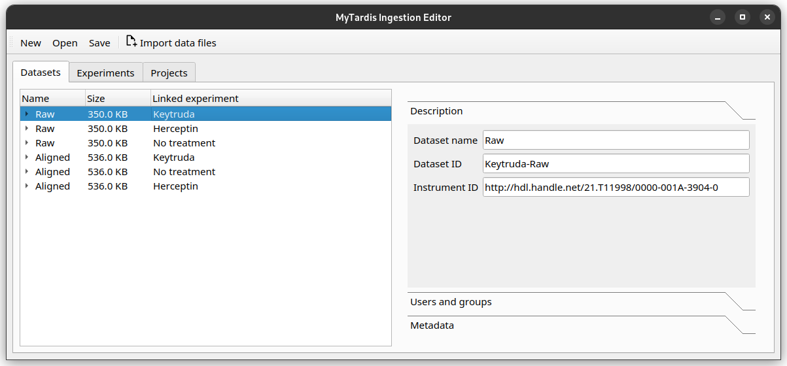
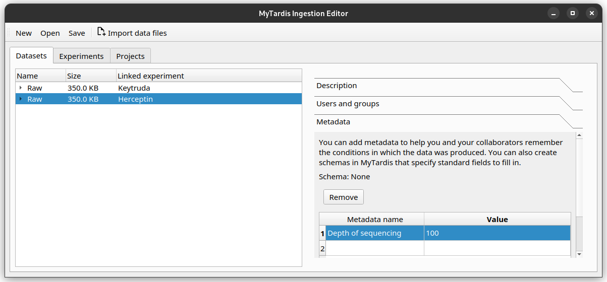
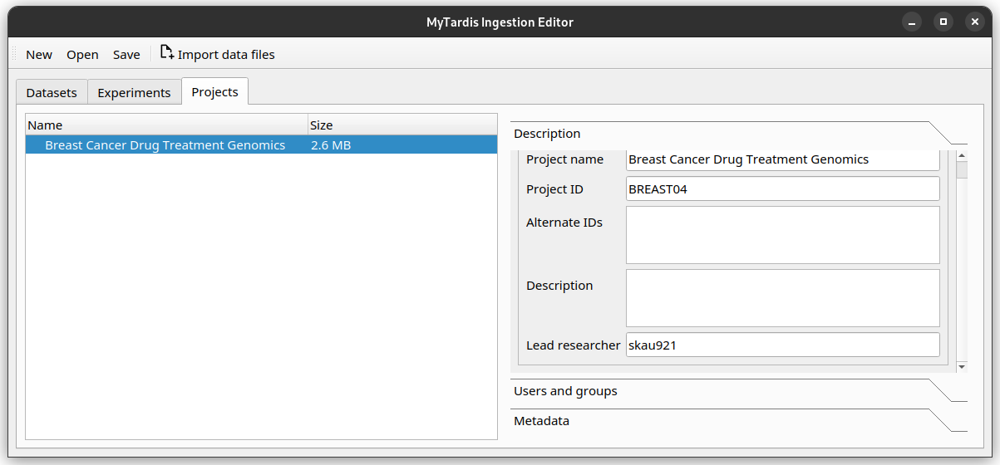

Annotate your data with metadata
Now that your files are imported and organised, you can start annotating them.
Basic metadata fields
In Instrument Data Service, there is a basic set of metadata fields applicable for any Projects, Experiments, Datasets or Datafiles. They are fields like name, ID, author and institution.
Additional metadata with Schemas
In addition, you can attach more metadata to a Project, Experiment, Dataset or Datafile through Schemas. They are made up of custom metadata fields called Parameters. You can specify the Parameter name and the value data type (for example, you can restrict the value to be a number, a string of characters, or a date.)
Schemas need to be defined in Instrument Data Service before you can use them in Instrument Data Wizard.
A Project, Experiment, Dataset or Datafile can have multiple Schemas associated with them.
What can I store in Schemas?
You can associate domain- or instrument- specific metadata with a Project, Experiment, Dataset or Datafile using Schemas. One way to use Schema could be to describe the study or treatment you have applied to the sample. Alternatively, you may wish to note down the instrument configuration used for acquiring data. For example, data from a sequencer may benefit from a Schema with depth of sequencing and sequencing method as Parameters.
It’s best to create a data dictionary document with your collaborators to specify what metadata should be stored. See Creating a data dictionary.
As part of onboarding, Instrument Data Service can support you in creating a data dictionary, and create any Schemas for your research group.
In the Instrument Data Wizard, first select the Project, Experiment, Dataset or Datafile you wish to edit, then you can change metadata on the right-hand pane.

The Description tab contains the basic metadata fields, while the Metadata tab contains the Schema metadata fields.
At the moment, the Instrument Data Wizard accepts free-text Parameter names and values.
Recording Sarah’s metadata
As Sarah, you have two things you need to include in the metadata. You need to note down the instrument the sequencing was done on, and the sequence depth used. In genetics, sequence depth measures the completeness of the sequencing process.
Adding the instrument ID
To record the instrument, you first need to find the instrument’s persistent identifier (PID). For Sarah, the sequencing company has given her the ID “http://hdl.handle.net/21.T11998/0000-001A-3904-0”.
Where can I find my instrument’s persistent identifier?
You can log in to the Instrument Data Service web portal to find the ID. See Finding my instrument’s persistent identifier (PID).
Instrument is a basic metadata field, so you can find it in the Description tab, as the Instrument ID field.
After filling out the field, the editor should look like this.
Adding the sequence depth
You have decided with your team that sequence depth should be recorded as a Schema Parameter on each Experiment, with the name Depth of sequencing, and value as an integer.
Try adding 100 as the sequence depth for the Herceptin Experiment. Once finished, your editor should look like this.
If you need to delete a Parameter row, select that row, then click the Remove button.
Keep your Schema names and values consistent
Record Parameter names and values consistently, using the same letter casing and units. This will help with finding your data in the future. For example, if you have a Parameter representing a length, decide on the name (e.g. “distance”, no uppercase) and the value unit (e.g. millimetre), and use them consistently.
Exercise: Adding more metadata
Lead Researcher is another basic metadata field on Projects. Try adding yourself as the lead researcher in the Project, using Sarah’s University username
skau921.
Your editor should look like this:
For the Herceptin experiment, there was an error in the sequencing process. You would like to mark it as inaccurate. Decide on how you would represent this, then annotate the experiment.
This is one way you may like to add this: